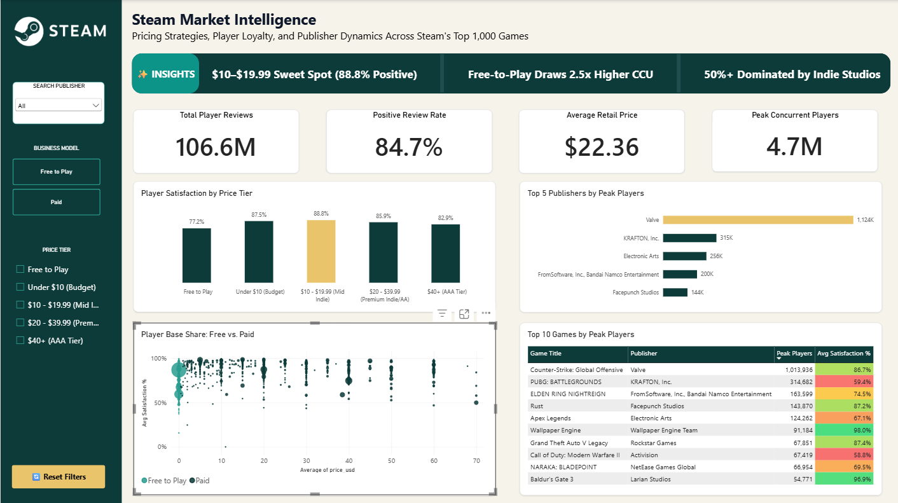
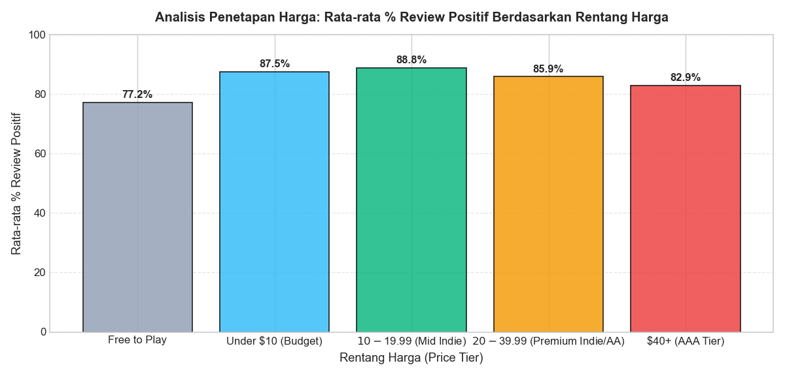
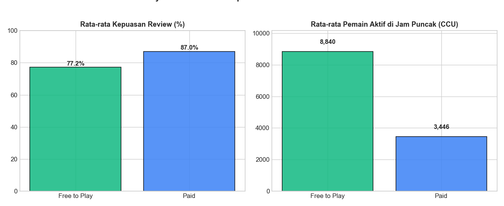
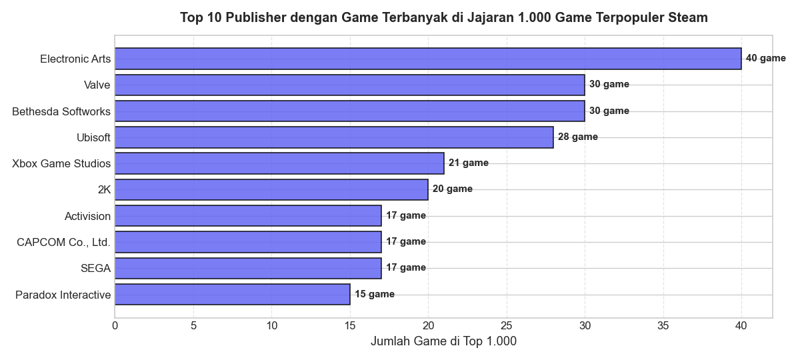

Steam Market Intelligence: Penetapan Harga, Loyalitas Pemain & Dinamika Publisher
Studi kasus analitik pasar video game global yang membedah 106,6 Juta ulasan gamer dan 4,7 Juta pemain simultan (CCU) pada 1.000 game terpopuler di Steam untuk menemukan formula penetapan harga optimal, paradoks model Free-to-Play, serta strategi retensi studio independen.
1 Ringkasan Eksekutif & Temuan Kunci
Rentang harga $10.00 hingga $19.99 menghasilkan rata-rata kepuasan gamer tertinggi (88,8% ulasan positif). Gamer menganggap tier harga ini memberikan rasio nilai-terhadap-kualitas (value-for-money) paling optimal tanpa ekspektasi grafis berlebihan.
Game Free-to-Play merebut 44% total pemain aktif (rata-rata 8.840 CCU per judul) meski hanya berjumlah 23,6% katalog. Namun, rating kepuasannya anjlok hampir 10% dibanding game berbayar (77,2% vs 87,0%) akibat friksi mikrotransaksi, cheater, dan review bombing.
Game mahal di atas $40 mengalami penurunan tingkat kepuasan signifikan (82,9%). Ketika gamer membayar harga penuh, toleransi mereka terhadap bug, optimasi performa yang buruk, atau sistem live-service sangat minim.
Valve Corporation menjadi publisher outlier absolut dengan lebih dari 1,12 Juta pemain serentak—lebih dari 3,5x lipat melampaui publisher terbesar kedua (KRAFTON ~315K via PUBG) dan EA (~256K via Apex Legends), didorong ekosistem CS:GO dan Dota 2.
2 Dashboard Interaktif Power BI

Fitur & Arsitektur Desain Dashboard:
- • Preattentive Color Highlighting: Penyorotan batang warna aksen emas (
#E9C46A) pada sweet-spot $10–$19.99 agar audiens langsung menangkap insight dalam 0,2 detik. - • Konsistensi Semantik: Warna Free to Play (
#2A9D8F) dan Paid (#0D3B3A) terkunci konsisten di seluruh visual. - • Tata Letak 4-Geometri: Memadukan kolom vertikal (kategori harga), batang mendatar (10 publisher), tabel metrik dengan conditional formatting, dan scatter plot statistik (korelasi harga vs kepuasan).
- • Tombol Reset Bookmark: Navigasi sidebar interaktif yang mampu mereset seluruh slicer dan cross-filtering grafik sekaligus dalam 1 klik.
3 Eksplorasi Data & Bukti Analitik
A. Dinamika Penetapan Harga: Kurva Kepuasan Pemain
Data membuktikan bahwa hubungan antara harga game dan kepuasan pemain berbentuk kurva lonceng terbalik (inverted curve). Kepuasan meningkat dari Free-to-Play (77,2%) menuju puncaknya di Mid Indie $10–$19.99 (88,8%), lalu mengalami penurunan bertahap saat menyentuh ranah game komersial mahal $40+ (82,9%).

B. Paradoks Skala: Pemain Masif vs Sentimen Ulasan
Meskipun model bisnis Free-to-Play mampu mengakuisisi pemain hingga 2,5x lipat lebih tinggi dari game berbayar, biaya emosional yang dibayar adalah volatilitas ulasan. Game berbayar mempertahankan basis penggemar yang jauh lebih setia dan suportif.

C. Peta Konsentrasi Publisher: Dominasi Outlier Valve
Peringkat 10 publisher terbesar berdasarkan pemain aktif membuktikan dominasi mutlak Valve. Namun di luar publisher raksasa, studio indie dan AA (seperti Pocketpair dengan Palworld dan Larian Studios dengan Baldur's Gate 3) terbukti mampu menembus jajaran elit global melalui eksekusi produk yang presisi.

4 Rekomendasi Strategis untuk Pengembang Game
Tentukan Harga di Koridor $14.99 – $19.99
Hindari jebakan menetapkan harga terlalu murah (<$5) karena harga murah sering kali dipersepsikan sebagai game berkualitas rendah. Koridor $15–$20 memberikan ruang margin profit yang sehat sekaligus peluang tertinggi mencapai predikat "Overwhelmingly Positive".
Kelola Ekspektasi Performa Sebelum Menyentuh $30+
Jika menetapkan harga di atas $30, prioritaskan uji coba QA dan stabilitas teknis pada hari peluncuran. Ulasan negatif di 72 jam pertama peluncuran akan menghancurkan algoritma rekomendasi Steam secara permanen.
Lindungi Integritas Gameplay dari Monetisasi Agresif
Pemisahan tegas antara monetisasi kosmetik dengan keadilan kompetitif adalah harga mati. Investasi pada sistem anti-cheat sama pentingnya dengan konten baru untuk mempertahankan ulasan positif di atas 70%.
Ingin Membedah Kode & File Dashboard?
Tersedia file Jupyter Notebook, dataset bersih, dan file `.pbix` Power BI asli.